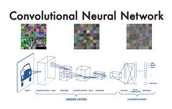
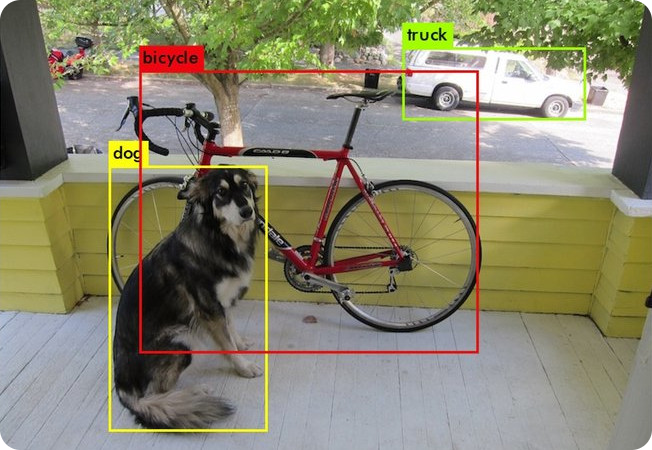

Сверточные нейронные сети (Convolutional Neural Networks, CNN) — это специализированный класс нейронных сетей, предназначенный для эффективной обработки данных с сеточной структурой, таких как изображения. Их ключевое преимущество заключается в способности автоматически выявлять иерархические пространственные признаки.
Принцип работы
Архитектура CNN строится на последовательном применении сверточных слоев, которые используют фильтры (ядра) для сканирования изображения и выделения характерных особенностей — от простых границ и текстур до сложных объектов.

Ключевые компоненты архитектуры:
Сверточные слои — извлекают пространственные признаки
Пулинговые слои — уменьшают размерность данных, сохраняя значимую информацию
Полносвязные слои — выполняют финальную классификацию на основе выделенных признаков
Такой подход позволяет CNN достигать высоких результатов в задачах компьютерного зрения, которые применимы для задач компьютерного зрения на базе Technic.
YOLO — это современная архитектура сверточных нейронных сетей для детекции объектов, которая принципиально отличается от классических подходов. Ключевая особенность заключается в том, что сеть обрабатывает изображение всего один раз, одновременно предсказывая bounding boxes и классы объектов.
NPU (Neural Processing Unit) — это специализированный процессор, разработанный исключительно для ускорения операций нейронных сетей. В отличие от центральных процессоров общего назначения, NPU оптимизирован для параллельной обработки матричных и векторных вычислений, что делает его чрезвычайно эффективным для задач искусственного интеллекта.
Инференс YOLO на Orange Pi 5 Pro

Orange Pi 5 Pro оснащен мощным NPU, обеспечивающим производительность до 6 TOPS. Это позволяет эффективно выполнять инференс моделей YOLO различных версий. Для этого необходимо конвертировать обученные веса в формат .rknn и добавить их в систему Technic.